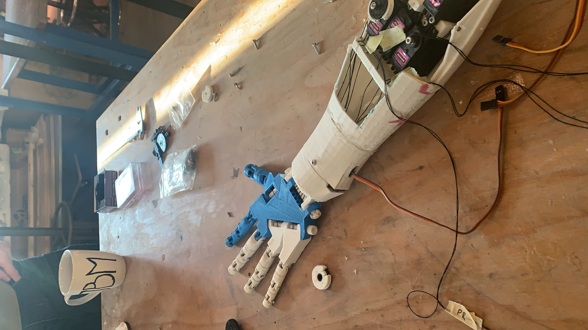
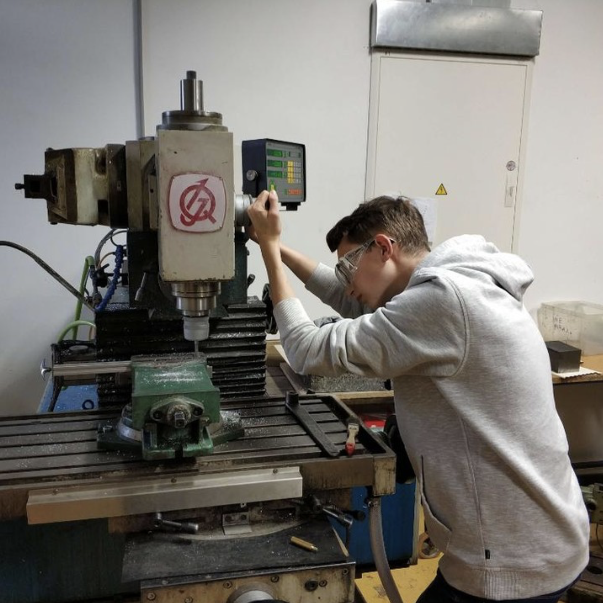
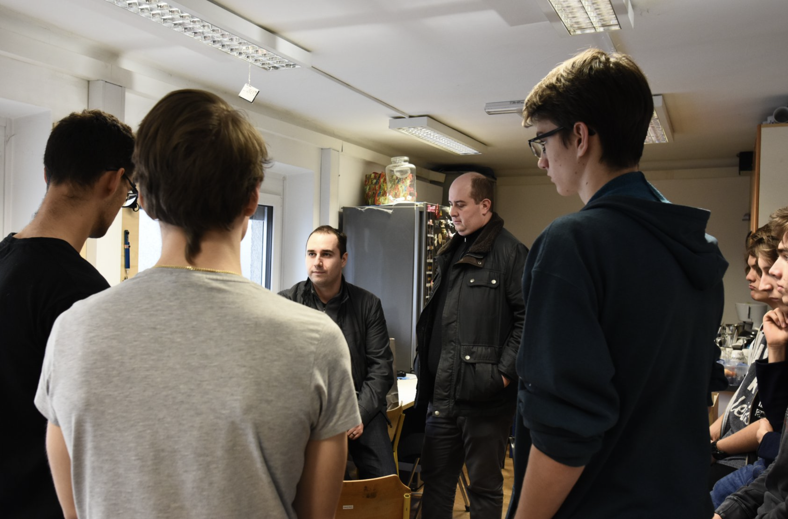
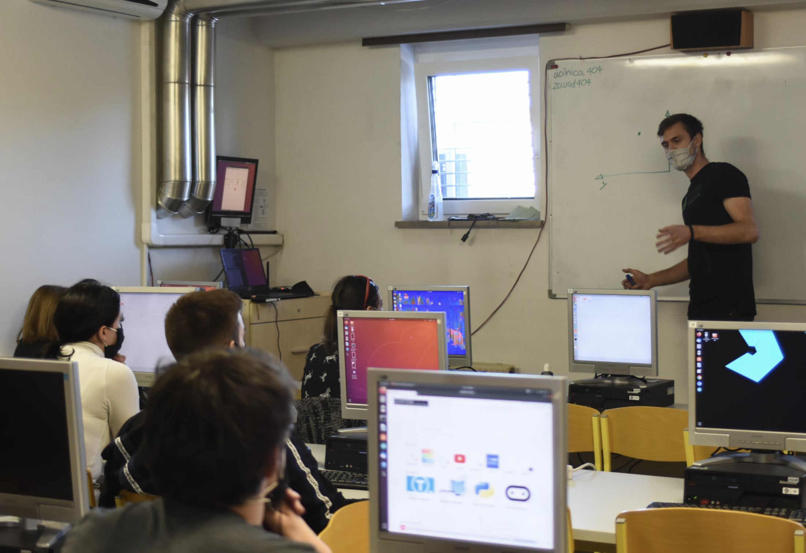
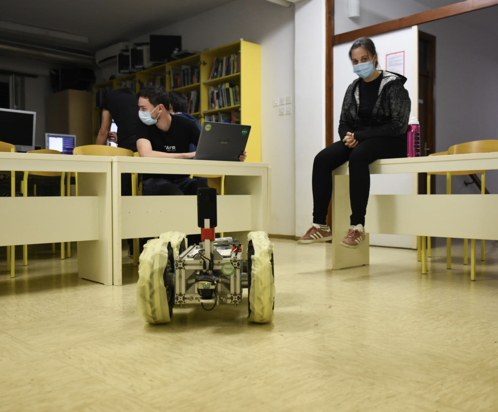

Robotics · Arduino · 3D Modelling
Worked on building a robotic arm at the 404 Institute, Slovenia's first youth technology and research centre.
As part of an interdisciplinary team of fellow high school students and mentors majoring in Computer Science, Electrical Engineering, and Mathematics, I worked on designing and constructing a robotic arm that could be controlled through brain-computer interfaces (BCI).
The project involved multiple phases: 3D modelling for component design, Arduino microcontroller programming to enable arm movements, and operating a professional 3D printer for physical component production. With the help of another group, we also delved into brain-computer interfaces, exploring signal processing, data analysis, and interface development.
Overall, the experience enriched my knowledge of 3D modelling, microcontroller programming, 3D printing, and BCI, and underlined how much collaboration and adaptability mattered when tackling new technological challenges.



Additionally, I attended a robotics workshop hosted by the same institute, where we were shown how to program a mobile robot. We familiarised ourselves with the basics of the ROS system and robot control fundamentals, tackled navigation challenges, and were given the opportunity to operate a real robot.

